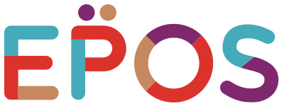

世界1,400ヶ所以上の空港ラウンジが使える会員制サービス。単体で申し込むと年会費が数万円かかるが、対応するクレジットカードを持っていれば無料〜割引価格で付帯することが多く、上位ランクのカードを持つきっかけの一つになっている。

ETIAS（欧州渡航認証）の導入予定と、EES（出入国システム）
URL: ETIAS公式サイトで最新情報を確認 （2026年5月時点）
ETIASは現在まだ始まっておらず、開始日も未定です（公式発表待ち）。日本国籍者も、開始後は渡航前にオンライン申請と手数料の支払いが必要になる見込みです。なお、EES（出入国システム）は2026年4月から全面運用されていて、入国時に指紋と顔写真の登録があります。事前の手続きは不要ですが、国境で時間がかかることがあります。
旅の準備で検索すると、どこも似たようなリストばかり。「パスポート・充電器・常備薬」──それだけじゃ足りないんです。旅先でパスポートをなくしたら？ 携帯を盗まれたら？ そんな最悪のシナリオにも対応できる、30カ国近くを旅した経験から作った、一段上の持ち物リストをぜひ活用してください。
教会や大聖堂では肩や膝を隠す服装が好まれるため、薄手の羽織りものがあると便利です。パリのメトロや観光地はスリが多く、バッグは前に抱えられる斜めがけやファスナー付きが安心。石畳を長く歩くので、歩きやすい靴も用意しておきましょう。
海外でネット接続がないと不安ですよね。少し前までは現地でSIMカードを買うところから旅が始まっていましたが、今ではeSIMという便利なものがあります。貴重な旅の時間を無駄にしないよう、渡航前に手続きを済ませておきましょう。eSIM会社はたくさんあり、比較しだすときりがありませんが、世界シェアNo.1のeSIM「Airalo」か、日本語サポートがある国内最大手の「trifa」を選んでおけばまず間違いありません。
スマホの設定が不安な人、複数人・複数端末でシェアしたい人、旅先でパソコンを使う予定がある人には、端末を受け取って電源を入れるだけで使えるモバイルWi-Fi（ポケットWi-Fi）レンタルという選択肢もあります。
挨拶・お礼・値段交渉など、旅行で役立つ基本フレーズをまとめました。